<ceb/> ~ Custom Element Builder
<ceb/> was initially a library dedicated for the authoring of Custom Elements (v0) then Custom Elements (v1).
However, the library is now providing building blocks going beyond the topic of composable UI elements.
It's about fundamental design principles, messaging, functional rendering and obviously composition of UI elements ;).
<ceb/> is released under the MIT license.
The source code is available on GitHub: github.com/tmorin/ceb.
Packages
The library is composed of many packages published on npmjs.com. All packages are compliant CommonJs and ES Module. That means, they can be directly used in almost all JavaScript runtimes.
Inversion Of Control:
- @tmorin/ceb-inversion-core
- @tmorin/ceb-inversion-builder
- @tmorin/ceb-inversion-testing-core
- @tmorin/ceb-inversion-testing-jest
- @tmorin/ceb-inversion-testing-mocha
Event/Message Architecture:
- @tmorin/ceb-messaging-core
- @tmorin/ceb-messaging-inversion
- @tmorin/ceb-messaging-simple
- @tmorin/ceb-messaging-simple-builder
- @tmorin/ceb-messaging-testing
- @tmorin/ceb-messaging-builder-core
- @tmorin/ceb-messaging-builder-inversion
- @tmorin/ceb-messaging-adapter-dom
- @tmorin/ceb-messaging-adapter-electron
- @tmorin/ceb-messaging-adapter-purify
Custom Element Authoring:
Templating:
- @tmorin/ceb-templating-engine
- @tmorin/ceb-templating-parser
- @tmorin/ceb-templating-literal
- @tmorin/ceb-templating-builder
Support:
Universal Module Definition
The bundle package @tmorin/ceb-bundle-web is also available as a UMD module from cdn.skypack.dev.
<!-- the optimized Universal Module Definition -->
<script src="https://cdn.skypack.dev/@tmorin/ceb-bundle-web/dist/umd/ceb.min.js"></script>
<!-- the not optimized Universal Module Definition -->
<script src="https://cdn.skypack.dev/@tmorin/ceb-bundle-web/dist/umd/ceb-bundle-web.js"></script>
Inversion
<ceb/> provides a built-in implementation of the Inversion Of Control principle.
Its purpose is to emphasize loose coupling between programing artifacts like classes, modules ...
But also to improve the modularity and extensibility of the overall software architecture like the Hexagonal Architecture.
Hexagonal Architecture
Despite both following facts, the IoC container can be applied to other architecture styles and the Hexagonal Architecture can be implemented without IoC, at the end, IoC and Hexagonal Architecture just work well together :).
This architecture helps to refine a model to separate the functional to the technical. The technical concern is pushed to the boundary of the model within contracts (i.e. interfaces), identified as ports. The contacts are implemented within the infrastructure by adapters
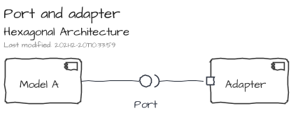
Obviously, a port can be satisfied by many adapters. Therefore, it becomes easy to configure a setup by execution contexts: development, integration testing, functional testing, production ...
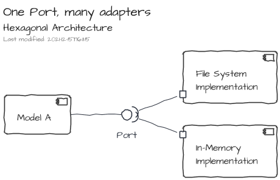
The relationship between two models can be handled with a regular Facade.
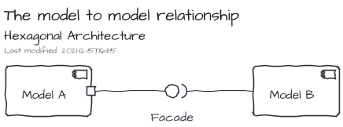
However, the relationship can be handled using the port/adapter approach. The introduction of a component which expose only the API of a model leads to definition of contextual adapters. For instance, the component API can be satisfied by an adapter dedicated for testing purpose which is just a mock of the core implementation.

IoC implementation
The IOC implementation is bundled in the NPM package @tmorin/ceb-inversion-core.
This IoC implementation relies on three main concepts. The first one is the registry. Its purpose is to provide services to register and resolve items. The second concept, the module, interacts with the registry in order to configure items to register. Finally, the last one, the container, manages the lifecycle of the modules and, therefore, the lifecycle of the registry's items too.

The Container

A Container is created using the ContainerBuilder, and especially its build() method.
Once built, the Container can be initialized, so that Modules and Components will be configured.
When a Container becomes useless, it has to be disposed, so that Modules and Components will be disposed too.
Once disposed, a container cannot be used anymore.
import { ContainerBuilder } from "@tmorin/ceb-inversion-core"
ContainerBuilder.get()
.build() // from `void` to `Built`
.initialize() // from `Built` to `Alive`
.then((container) => {
return container.dispose() // from `Alive` to `Disposed`
})
The Registry
The Registry handles only two kinds of registration modes: by value and by factory.
With the by value mode, the value must exist at the time of the registration, and the registry will always resolve it.
import { DefaultRegistry } from "@tmorin/ceb-inversion-core"
// create a fresh registry
const registry = new DefaultRegistry()
// register a Value
registry.registerValue("key", "the value")
// resolve the entry
const a = registry.resolve("key")
// resolve again the entry
const b = registry.resolve("key")
// assert instances are the same
console.assert(a === b)
However, with the by factory mode, the value is created at the resolution time. Moreover, its creation can be based on entries available in the registry. By default, the factory is invoked for each resolution.
import { DefaultRegistry } from "@tmorin/ceb-inversion-core"
// create a fresh registry
const registry = new DefaultRegistry()
// register a Factory
registry.registerFactory("key", () => ({ k: "v" }))
// resolve the entry
const a = registry.resolve("key")
// resolve again the entry
const b = registry.resolve("key")
// assert instances are not the same
console.assert(a !== b)
The option singleton prevents this invocation of the factory at each resolution.
That means the value is created only once, at its first resolution.
import { DefaultRegistry } from "@tmorin/ceb-inversion-core"
// create a fresh registry
const registry = new DefaultRegistry()
// register a Factory acting as a singleton
registry.registerFactory("key", () => ({ k: "v" }), { singleton: true })
// resolve the entry
const a = registry.resolve("key")
// resolve again the entry
const b = registry.resolve("key")
// assert instances are the same
console.assert(a === b)
The Modules

A Module helps to bundle entry registrations to the registry.
It's an implementation of the interface Module.
However, a convenient abstracted implementation, AbstractModule, handles already the boilerplate stuff.
import { AbstractModule } from "@tmorin/ceb-inversion-core"
export class WorldModule extends AbstractModule {
async configure(): Promise<void> {
// register a name
this.registry.registerValue("name", "World")
}
}
export class GreetingModule extends AbstractModule {
async configure(): Promise<void> {
// register a factory
this.registry.registerFactory(
"greeting",
(registry) => `Hello, ${registry.resolve("name")}!`
)
}
}
The modules are used during the creation of a container and must be provided to the ContainerBuilder.
import { ContainerBuilder } from "@tmorin/ceb-inversion-core"
import { GreetingModule, WorldModule } from "./ioc-container-module-class"
ContainerBuilder.get()
.module(new GreetingModule())
.module(new WorldModule())
.build()
.initialize()
.then((container) => {
// resolve the greeting entry
const greeting = container.registry.resolve("greeting")
// assert the greeting text match the expected one
console.assert(greeting === "Hello, World!")
// release the stateful stuff
return container.dispose()
})
.catch((e) => console.error(e))
Sometime, the class usage can be a bit too much.
Therefore, an inline way to available using OnlyConfigureModule.create(...).
import {
ContainerBuilder,
OnlyConfigureModule,
} from "@tmorin/ceb-inversion-core"
ContainerBuilder.get()
.module(
OnlyConfigureModule.create(async function () {
// register a name
this.registry.registerValue("name", "John Doe")
// register a factory
this.registry.registerFactory(
"greeting",
(registry) => `Hello, ${registry.resolve("name")}!`
)
})
)
.build()
.initialize()
.then((container) => {
// resolve the greeting entry
const greeting = container.registry.resolve("greeting")
// assert the greeting text match the expected one
console.assert(greeting === "Hello, John Doe!")
// release the stateful stuff
return container.dispose()
})
.catch((e) => console.error(e))
The Components
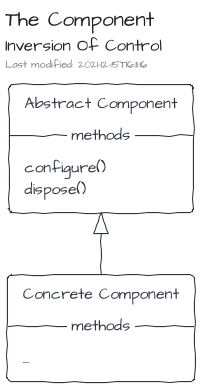
Components follow the lifecycle of Modules, i.e. configure then dispose.
To be discovered and managed by the Container, they must be registered with the ComponentSymbol Registry Key.
Components are the right places to implement Process Manager or other reactive programing artifacts.
import { Component } from "@tmorin/ceb-inversion-core"
// define a component
export class MyModule extends Component {
async configure(): Promise<void> {
// execute things when container starts
}
async dispose(): Promise<void> {
// execute things when container stops
}
}
Hexagonal testing
The testing model is bundled in the NPM package @tmorin/ceb-inversion-testing-core.
The isolation, provided by the Hexagonal Architecture, makes the testing of models easier. However, it leads to an annoying side effect: some tests, especially the functional ones, are duplicated among the adapters.
<ceb/> provides a testing library to prevent test duplication.
The purpose is to define tests in the model which have to be executed in the adapters.
So that, an adapter can validate the port implementation satisfy the model.
The library leverages on the IoC container to let the adapter binds its implementation to the port.
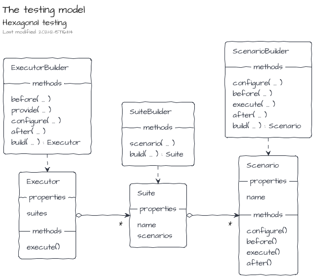
From the model point of view, i.e. the supplier, the suites are created using the TestSuiteBuilder and the scenarios with the TestScenarioBuilder.
import { assert } from "chai"
import { OnlyConfigureModule } from "@tmorin/ceb-inversion-core"
import {
TestScenarioBuilder,
TestSuiteBuilder,
} from "@tmorin/ceb-inversion-testing-core"
export const SuiteA = TestSuiteBuilder.get("ToEmphasize Port")
.scenario(
TestScenarioBuilder.get("Greeting target is emphasized")
.configure((containerBuilder) => {
containerBuilder.module(
OnlyConfigureModule.create(async function () {
this.registry.registerFactory("Greeting", (registry) => {
// expect an adapter of the port "ToEmphasize"
const toEmphasize =
registry.resolve<(value: string) => string>("ToEmphasize")
// use the adapter to emphasize the target name
return `Hello, ${toEmphasize("john doe")}`
})
})
)
})
.execute((container) => {
// resolve the model artifact
const text = container.registry.resolve<string>("Greeting")
// validate the model artifact works as expected with the tested adapter
assert.equal(text, "Hello, JOHN DOE!")
})
.build()
)
.build()
Mocha Implementation
The Mocha implementation of the testing model is bundled in the NPM package @tmorin/ceb-inversion-testing-mocha.
An implementation of the testing model is provided for Mocha.
From the provider point of view, the suites are executed using the MochaTestSuiteExecutorBuilder.
import { MochaTestSuiteExecutorBuilder } from "@tmorin/ceb-inversion-testing-mocha"
import { OnlyConfigureModule } from "@tmorin/ceb-inversion-core"
import { SuiteA } from "./hexagonal_testing-suite"
describe("ToEmphasize Adapter", function () {
MochaTestSuiteExecutorBuilder.get(SuiteA)
.configure((containerBuilder) => {
containerBuilder.module(
OnlyConfigureModule.create(async function () {
this.registry.registerValue("ToEmphasize", (value: string) =>
value.toUpperCase()
)
})
)
})
.build()
.execute()
})
Jest Implementation
The Jest implementation of the testing model is bundled in the NPM package @tmorin/ceb-inversion-testing-jest.
An implementation of the testing model is provided for Jest.
From the provider point of view, the suites are executed using the JestTestSuiteExecutorBuilder.
import { JestTestSuiteExecutorBuilder } from "@tmorin/ceb-inversion-testing-jest"
import { OnlyConfigureModule } from "@tmorin/ceb-inversion-core"
import { SuiteA } from "./hexagonal_testing-suite"
describe("ToEmphasize Adapter", function () {
JestTestSuiteExecutorBuilder.get(SuiteA)
.configure((containerBuilder) => {
containerBuilder.module(
OnlyConfigureModule.create(async function () {
this.registry.registerValue("ToEmphasize", (value: string) =>
value.toUpperCase()
)
})
)
})
.build()
.execute()
})
Messaging
<ceb/> provides a built-in solution for the implementation of the application logic which relies on an Event/Message Architecture.
The original purpose is to strictly separate the interaction logic (i.e. the Custom Elements) and the application logic. The communication between both worlds is handled by an asynchronous API relying on messages transiting within buses. A message is a simple data structure expressing an action to do, its result or a notification about one of its side effect. A bus is a component providing a set of commands to emit and receive messages.
The core of the solution is composed of a model and a set of building blocks implementing an Event/Message Architecture. The reference implementation is a vanilla TypeScript/JavaScript flavor working in almost all JavaScript context: Browser, Node, Electron ... Additional packages provide support for side concerns like integration, testing ...
Concepts
All Event/Message Architectures rely on common concepts.
Messages
A message is a structured piece of information which contains a kind, a set of headers and a body.
<ceb/> recognizes three main kinds of messages:
- A Command expresses the intent of the producer to change the state of the system.
- A Query expresses the intent of the producer to know the state of the system.
- An Event expresses that something has happened in the past.
An additional one, the Result, is used to provide a feedback to the producer within a Request-Reply scenario.

Message Buses
A Message Bus is a component able to handle the sending and reception of messages.
The described messages are transmitted in buses from their producers to eventual receivers.
<ceb/> recognizes three kind of buses:
- The Command Bus dedicated for the Command messages.
- The Query Bus dedicated for the Query messages.
- The Event Bus dedicated for the Event messages.
The Command Bus and Query Bus embraces the Point-to-Point Channel characteristics. So that, Request-Reply scenario can be implemented, especially for the Query Bus channel where the purpose is get a Result from the query handler.
On the other hand, the Event Bus relies on the Publish-Subscribe Channel characteristics.


Gateway
From a user point of view, a gateway is an entry point to produce and consume messages. It exposes the three message buses: the Command Bus, the Query Bus and the Event Bus. Additionally, an Observer is also available to track some messaging side cases like error handling.

Command And Query Separation
The CQS design pattern emphases a strict separation of the APIs about read and write operations. At the code level, its implementation is the expressiveness of dedicated programming artifacts for each concern: wrote operations vs read operations.

On an upper level, at the Bounded Context one, the CQS design pattern can be implemented leveraging on messaging systems.
- The Bounded Context's Facade creates and dispatches Commands and Queries to the Gateway.
- Then, the Gateway delegates to the right handler the execution of the action.
- Finally, the implementations of the handlers leverage on the model artifacts (Entity, Service ...) to fulfill the requests.

The logic of the command handler produces an output which is composed of two items:
- a result which will be sent back to the requester
- as well as an additional set of events which will be published on the event bus

On the other side, the logic of the query handler produces a result which will be sent back to the requester

Command And Query Responsibility Segregation
When CQS is applied at the software architecture level, an adaptation of the command handling and query handling can be done to strictly segregate the model for the commands and the model for the queries. There are many strategies to feed the query model based on the operations made by the command one. One of them is to leverage on the events published by the command handling part. The ways to feed the query model by events depends on the nature of the application. Some can just work with transient events, whereas others may require a more robust approach based on queues or streams of events potentially persisted.

Additionally, the usage of Events can lead to a model driven by the Event Sourcing approach where the produced Event are not just a side effect of the command handling but also its source of truth.
Location Transparency
Location Transparency is the ability to share or get resources without the knowledge of their localizations.
Because of the introduction of the messages and their underlying buses provided by the Gateway, the communication between Bounded Contexts is natively transparent. Therefore, only infrastructural components will have to be adapted to move a Bound Context from its original Monolith to a dedicated side Microlith.


Additionally, scaling of Bounded Contexts can be done leveraging only on infrastructural components.

Messages
The definition of the messages is part of the NPM package @tmorin/ceb-messaging-core.
Anatomy of a message
A message is a data structure composed of three properties: kind, headers and body.
| Property | Description |
|---|---|
kind | Provide the intention of the message producer. |
headers | Provide information to the messaging system to handle the message. The headers are a set of arbitrary key/value entries. Two entries are expected for each message: the messageType and the messageId. |
body | An arbitrary set of information expected by the receiver. |
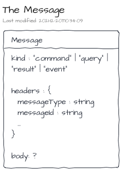
The commands
A Command is a data structure matching the Message one.
| Property | Description |
|---|---|
kind | The value is always command. |
headers.messageType | Help the messaging system to route the message to the right command handler. |
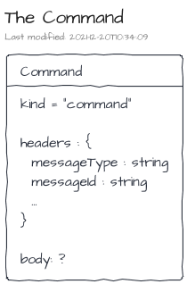
Commands are handled by Command Handlers. By convention, a command type should only be processed by one Command Handler implementation and process only once. The main purpose of a command handler is to interact with model artifacts to mutate the state of a system. The underlying side effects can be described by a Result and/or a set of Events.
The queries
A Query is a data structure matching the Message one.
| Property | Description |
|---|---|
kind | The value is always query. |
headers.messageType | Help the messaging system to route the message to the right query handler. |

Queries are handled by Query Handlers. By convention, a query type can be processed by different Command Handlers implementations and process more than once. The main purpose of a query handler is to interact with model artifacts to gather data and build a view of the system's state. The view is finally sent back to the requester within a Result.
The results
A Result is a data structure matching the Message one.
| Property | Description |
|---|---|
kind | The value is always result. |
headers.messageType | Help requester to handle the result, i.e. success vs failure. |
headers.originalMessageId | It's the messageId of the related command or query. It helps the requester to distinguish to which command or query a result belongs to. |
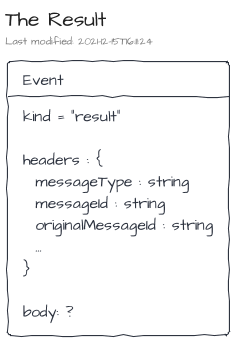
The events
An Event is a data structure matching the Message one.
| Property | Description |
|---|---|
kind | The value is always event. |
headers.messageType | Help the messaging system to route the message to the right event listeners. |
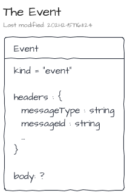
Events are listened by Event Listeners. By convention, an event type can be listened by many Event listeners. The main purpose of an event listener is to react on the event.
Message Construction
Messages are simple vanilla JavaScript objects.
For instance to create a command Greeting, the following snippet is enough.
const greetingCmd = {
kind: "command",
headers: {
messageType: "Greeting",
messageId: "command-0"
},
body: "Hello, World!"
}
However, manual creation of messages is error-prone and not really DRY. Therefore, a builder is provided to, at least, build messages which are technically valid.
Creation of commands using the MessageBuilder:
import { MessageBuilder } from "@tmorin/ceb-messaging-core"
// create a command
const aCommandA = MessageBuilder.command("CommandA")
// set a custom identifier
.identifier("command-1")
// add an header entry
.headers({ k1: "v1" })
// set a body
.body("a body")
// build the result
.build()
Creation of queries using the MessageBuilder:
import { MessageBuilder } from "@tmorin/ceb-messaging-core"
// create a query
const aQueryA = MessageBuilder.query("QueryA")
// set a custom identifier
.identifier("query-1")
// add an header entry
.headers({ k1: "v1" })
// set a body
.body("a body")
// build the result
.build()
Creation of events using the MessageBuilder:
import { MessageBuilder } from "@tmorin/ceb-messaging-core"
// create an event
const anEventA = MessageBuilder.event("EventA")
// set a custom identifier
.identifier("event-1")
// add an header entry
.headers({ k1: "v1" })
// set a body
.body("a body")
// build the result
.build()
Creation of results using the MessageBuilder:
import { MessageBuilder } from "@tmorin/ceb-messaging-core"
// create a basic command
const commandA = MessageBuilder.command("CommandA").build()
// create a result
const resultA = MessageBuilder.result(commandA)
// override the message type, by default it's `result`
.type("custom-type")
// set a custom identifier
.identifier("result-1")
// add an header entry
.headers({ k1: "v1" })
// set a body
.body("a body")
// build the result
.build()
Gateway
The definition of the Gateway is part of the NPM package @tmorin/ceb-messaging-core.
The Gateway is a set of interfaces acting as an entry point to the messaging world. It can be used to send or handle messages but also to observe the implementations' behavior.
A Gateway provides accessors to the main buses: the CommandBus, the QueryBus and the EventBus. A remaining accessor provides an observable view point of the Gateway.
A Gateway should be ready to used once created.
Its end-of-life is triggered with its method dispose().
Its purpose is to release all stateful stuff.
So that, once invoked, the Gateway cannot be used anymore.

Commands
The CommandBus provides methods to interact with the Point-to-Point Channel which handles the commands. The CommandBus supports the one-way or two-way conversations.
On the receiver side, the handled commands are registered using the method handle().
The method expects the type of the command to handle as well as its handler.
The handler is a callback function which will be invoked once a command is received.
A handler may return an output which may be composed of an optional Result and/or an optional set of Events.
If expected, the Result will be sent back to the sender.
About the set of Events, they will be published on the EventBus.
At any time, a handler can be unregistered using the Removable object returned by the method handler().
On the sender side, those requiring a one-way conversation must use the method executeAndForget().
Within this conversation style, the command sender doesn't expect a Result from the receiver side.
So that, the receiver and server sides don't need to handle the Request-Reply pattern.
However, senders requiring a two-way conversation must use the method execute().
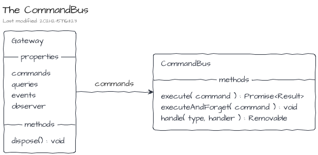
Queries
The QueryBus provides methods to interact with the Point-to-Point Channel which handles the queries. The QueryBus supports only the two-way conversations.
On the receiver side, the handled queries are registered using the method handle().
At any time, a handler can be unregistered using the Removable object returned by the method handler().
On the sender side, the queries are sent to the bus and the replies received using the method execute().
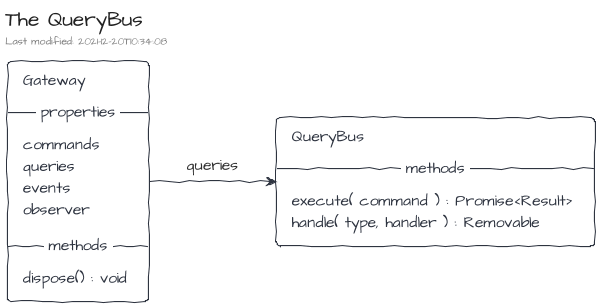
Events
The EventBus provides methods to interact with the Publish-Subscribe Channel which handles the events.
The publisher must use the method publish() to publish events.
On the other side, the subscribers must use the method subscribe() to subscribe on published events.
At any time, a subscription can be disposed using the Removable object returned by the method subscribe().

Observer
The Observer is a view side of the Control Bus. It provides an entry point to observe the main buses: the CommandBus, the QueryBus and the EventBus.

Inversion
The definition of the Inversion module is part of the NPM package @tmorin/ceb-messaging-inversion.
Command and Query handlers as well as Event listeners can be discovered and managed by Inversion on the container initialization.
The module MessagingModule takes care of the discovery, registration and also disposition of handlers and listeners at the container end of life.
Discoverable Command handlers must match the DiscoverableCommandHandler interface.
import {
Command,
Event,
MessageBuilder,
Result,
} from "@tmorin/ceb-messaging-core"
import { DiscoverableCommandHandler } from "@tmorin/ceb-messaging-inversion"
// create the handler using the "implementation" way
export class GreetSomebodyHandler
implements
DiscoverableCommandHandler<
Command<string>,
Result<string>,
Array<Event<string>>
>
{
// the type of the Command to handle
type = "GreetSomebody"
// the handler
handler(command: Command<string>) {
// create the greeting text
const result = MessageBuilder.result(command)
.body(`Hello, ${command.body}!`)
.build()
// create the event
const events = [
MessageBuilder.event("SomeoneHasBeenGreeted").body(command.body).build(),
]
// return the output
return { result, events }
}
}
Discoverable Query handlers must match the DiscoverableQueryHandler interface.
import { MessageBuilder, Query, Result } from "@tmorin/ceb-messaging-core"
import { DiscoverableQueryHandler } from "@tmorin/ceb-messaging-inversion"
// create the handler using the "implementation" way
export class WhatTimeIsItHandler
implements DiscoverableQueryHandler<Query<void>, Result<string>>
{
// the type of the Query to handle
type = "WhatTimeIsIt"
// the handler
handler(query: Query<void>) {
return MessageBuilder.result(query).body(new Date().toISOString()).build()
}
}
Discoverable Event listeners must match the DiscoverableEventListener interface.
import { Event } from "@tmorin/ceb-messaging-core"
import { DiscoverableEventListener } from "@tmorin/ceb-messaging-inversion"
// create the listener using the "object" way
export const SOMEONE_HAS_BEEN_GREETED_LISTENER: DiscoverableEventListener<
Event<string>
> = {
// the type of the Event to handle
type: "SomeoneHasBeenGreeted",
// the handler
listener: (event: Event<string>) => {
console.info(`${event.body} has been greeted`)
},
}
To be discoverable the handlers and listeners must be registered in the Container's Registry with the right Registry Key.
DiscoverableCommandHandlerSymbolfor the Command handlersDiscoverableQueryHandlerSymbolfor the Query handlersDiscoverableEventListenerSymbolfor the Event listeners
import { AbstractModule } from "@tmorin/ceb-inversion-core"
import { GreetSomebodyHandler } from "./inversion-discovery-command"
import { WhatTimeIsItHandler } from "./inversion-discovery-query"
import { SOMEONE_HAS_BEEN_GREETED_LISTENER } from "./inversion-discovery-event"
import {
DiscoverableCommandHandlerSymbol,
DiscoverableEventListenerSymbol,
DiscoverableQueryHandlerSymbol,
} from "@tmorin/ceb-messaging-inversion"
// define a "regular" Module
export class DiscoverableStuffModule extends AbstractModule {
async configure() {
// register the command handler
this.registry.registerValue(
DiscoverableCommandHandlerSymbol,
new GreetSomebodyHandler()
)
// register the query handler
this.registry.registerFactory(
DiscoverableQueryHandlerSymbol,
() => new WhatTimeIsItHandler()
)
// register the event listener
this.registry.registerValue(
DiscoverableEventListenerSymbol,
SOMEONE_HAS_BEEN_GREETED_LISTENER
)
}
}
Finally, the module MessagingModule and those registering discoverable handlers and listeners must be registered as other modules.
import { ContainerBuilder } from "@tmorin/ceb-inversion-core"
import {
Gateway,
GatewaySymbol,
MessageBuilder,
} from "@tmorin/ceb-messaging-core"
import { DiscoverableStuffModule } from "./inversion-discovery-module"
import { MessagingModule } from "@tmorin/ceb-messaging-inversion"
import { SimpleModule } from "@tmorin/ceb-messaging-simple-inversion"
ContainerBuilder.get()
// register the module which discovers the handlers and listeners
.module(new MessagingModule())
// register the module which provide a Gateway instance
.module(new SimpleModule())
// register the module which contain the discoverable handlers and listeners
.module(new DiscoverableStuffModule())
.build()
.initialize()
.then(async (container) => {
// resolve the gateway
const gateway = container.registry.resolve<Gateway>(GatewaySymbol)
// register an event listener
gateway.events.subscribe("SomeoneHasBeenGreeted", (event) => {
console.info(`${event.body} has been greeted`)
})
// create and execute the GreetSomebody command
const greetSomebody = MessageBuilder.command("GreetSomebody")
.body("World")
.build()
const cmdResult = await gateway.commands.execute(greetSomebody)
console.info(`the greeting text: ${cmdResult.body}`)
// create and execute the WhatTimeIsIt query
const whatTimeIsIt = MessageBuilder.query("WhatTimeIsIt")
.body("World")
.build()
const qryResult = await gateway.queries.execute(whatTimeIsIt)
console.info(`the time: ${qryResult.body}`)
return container.dispose()
})
.catch((e) => console.error(e))
Reference Implementation
The reference implementation is defined in the NPM package @tmorin/ceb-messaging-simple.
The reference implementation relies on an in-memory and single process approach. So that, the implementation is free of network or any other concerns related to distributed systems.
The SimpleGateway
A SimpleGateway instance can be got from the following three approaches: the global instance, the factory method or the constructor.
The global instance
A global instance of the SimpleGateway is available from the static field SimpleGateway.GOBAL.
It's a lazy property, in fact the instance is only created once at its first get.
import { MessageBuilder } from "@tmorin/ceb-messaging-core"
import { SimpleGateway } from "@tmorin/ceb-messaging-simple"
// create an event and publish it using the global SimpleGateway instance
const event = MessageBuilder.event("EventA").build()
SimpleGateway.GLOBAL.events.publish(event)
The factory method
A SimpleGateway instance can be easily created using the factory method, i.e. the static method SimpleGateway.create().
The method returns a fresh new SimpleGateway instance at each call.
import { Gateway, MessageBuilder } from "@tmorin/ceb-messaging-core"
import { SimpleGateway } from "@tmorin/ceb-messaging-simple"
// create a SimpleGateway instance
const gateway: Gateway = SimpleGateway.create()
// create an event and publish it
const event = MessageBuilder.event("EventA").build()
gateway.events.publish(event)
// dispose the created SimpleGateway
gateway.dispose().catch((e) => console.error(e))
The constructor
The constructor approach provides a fine grain control of the Gateway dependencies: the CommandBus, the QueryBus, the EventBus and the GatewayObserver.
import { GatewayEmitter, MessageBuilder } from "@tmorin/ceb-messaging-core"
import {
SimpleCommandBus,
SimpleEventBus,
SimpleGateway,
SimpleQueryBus,
} from "@tmorin/ceb-messaging-simple"
// create the SimpleGateway dependencies
const emitter = new GatewayEmitter()
const events = new SimpleEventBus(emitter)
const commands = new SimpleCommandBus(events, emitter)
const queries = new SimpleQueryBus(emitter)
// create a SimpleGateway instance
const gateway = new SimpleGateway(events, commands, queries, emitter)
// create an event and publish it
const event = MessageBuilder.event("EventA").build()
gateway.events.publish(event)
// dispose the created SimpleGateway
gateway.dispose().catch((e) => console.error(e))
The Inversion Module
The package provides an Inversion Module which can be used to create (optionally) and publish the SimpleGateway instance on the registry.
Create a container with the default module behavior, i.e. the SimpleGateway will be created from scratch automatically:
import { ContainerBuilder } from "@tmorin/ceb-inversion-core"
import {
Gateway,
GatewaySymbol,
MessageBuilder,
} from "@tmorin/ceb-messaging-core"
import { SimpleModule } from "@tmorin/ceb-messaging-simple-inversion"
ContainerBuilder.get()
// let the module created it-self the SimpleGateway instance
.module(new SimpleModule())
.build()
.initialize()
.then((container) => {
// resolve the gateway
const gateway = container.registry.resolve<Gateway>(GatewaySymbol)
// publish a simple message
gateway.events.publish(MessageBuilder.event("Hello").build())
})
.catch((e) => console.error(e))
Create a container with a provided SimpleGateway instance:
import { ContainerBuilder } from "@tmorin/ceb-inversion-core"
import {
Gateway,
GatewaySymbol,
MessageBuilder,
} from "@tmorin/ceb-messaging-core"
import { SimpleGateway } from "@tmorin/ceb-messaging-simple"
import { SimpleModule } from "@tmorin/ceb-messaging-simple-inversion"
ContainerBuilder.get()
.module(
new SimpleModule({
// the provided instance, there the GLOBAL one
gateway: SimpleGateway.GLOBAL,
})
)
.build()
.initialize()
.then((container) => {
// resolve the gateway
const gateway = container.registry.resolve<Gateway>(GatewaySymbol)
// publish a simple message
gateway.events.publish(MessageBuilder.event("Hello").build())
})
.catch((e) => console.error(e))
Adapters
The DOM Adapter
The adapter is bundled in the NPM package @tmorin/ceb-messaging-adapter-dom.
The DOM adapter provides a bridges between the DOM event handling system and a Gateway. The main purpose is to drive the development of UI components with an Event/Message Architecture approach without dependencies or additional library.
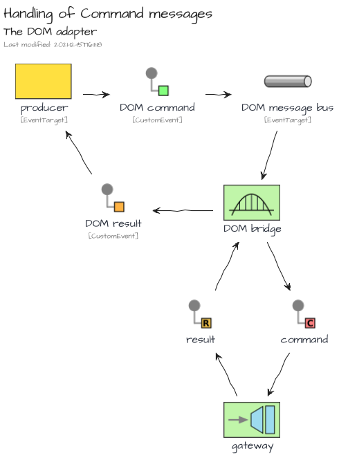
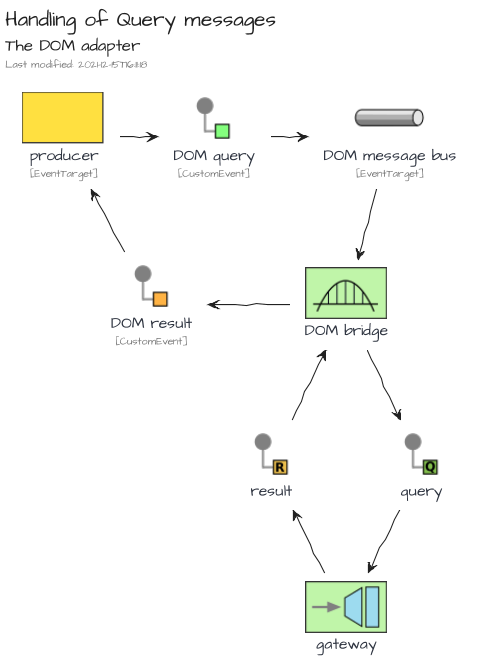
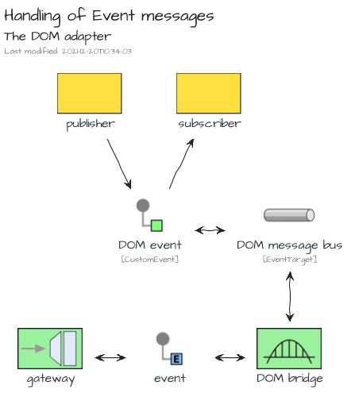
The Electron Adapter
The adapter is bundled in the NPM package @tmorin/ceb-messaging-adapter-electron.
The Electron adapter provides a bridges between the Electron IPC Event Emitter and a Gateway. The main purpose is to standardize the communication flows between the main context and the renderer contexts based on the Location Transparency pattern.
The bridge is bidirectional for all message kinds. However, messages dispatched from a Renderer context are only forwarded to the Main context. That means sibling Renderer contexts won't get the messages.
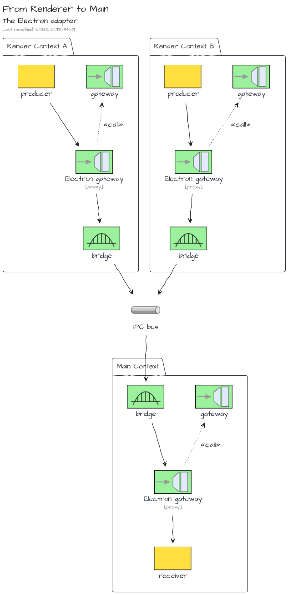
However, on the other side, messages dispatched from the Main Context are forwarded to all Renderer contexts.

The Purify Adapter
The adapter is bundled in the NPM package @tmorin/ceb-messaging-adapter-purify.
The Purify adapter provides an adapter of Gateways which integrates Purify types. The main purpose is to provide a hint of functional programing style for the processing of commands, queries and results.
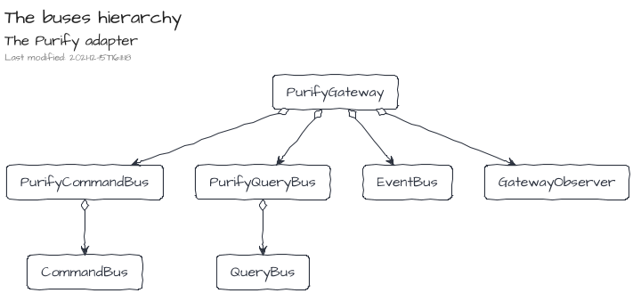
Elements
<ceb/> relies on the Builder Pattern and also Decorators to define, enhance and finally register Custom Elements.
The main builder ElementBuilder handles the definition and registration of Custom Elements.
Then, other builders can be used to enhance it:
- AttributeBuilder: to define attributes and react on changes
- FieldBuilder: to define fields (property/attribute) and react on changes
- OnBuilder: to listen to DOM events
- ContentBuilder: to initialize the light or shadow DOM
- TemplateBuilder: to path the DOM of the custom element
- ReferenceBuilder: to get reference of children nodes
- AttributePropagationBuilder: to delegate attribute mutations to child nodes
- PropertyDelegationBuilder: to delegate the property accesses to a single child node
For convenience, the package @tmorin/ceb-bundle-web provides all built-in artifacts for the Custom Elements authoring.
ElementBuilder
The builder is bundled in the NPM package @tmorin/ceb-elements-core.
The class ElementBuilder provides services to define and register a Custom Element.
Challenge yourself
Will you be able to ...
- change the tag name to
<my-greeting></my-greeting>without changing the class name? - transform
SimpleGreetingas an extension ofh1, so that can be created with<h1 is="my-greeting"></h1>? the class ofh1isHTMLHeadingElement
See the Pen <ceb/> ~ challenge/ElementBuilder by Thibault Morin (@tmorin) on CodePen.
Define a regular Custom Element
import { ElementBuilder } from "@tmorin/ceb-elements-core"
// defines and register the custom element class
@ElementBuilder.get().decorate()
class SimpleGreeting extends HTMLElement {
constructor(public name = "World") {
super()
}
connectedCallback() {
this.textContent = `Hello, ${this.name}!`
}
}
Once registered, the Custom Element can be created with three different styles: markup, Object-Oriented and, hybrid.
The first one relies on the tag name of the Custom Element within the markup of an HTML document.
document.body.innerHTML = `<simple-greeting></simple-greeting>`
The second one relies on the Object-Oriented nature of the Custom Element. Basically, the class can be instantiated, and the created object can be then append to the DOM.
const helloJohn: SimpleGreeting = new SimpleGreeting("John")
document.body.appendChild(helloJohn)
The last one lies between the markup and OO style.
const helloDoe: SimpleGreeting = document.createElement("simple-greeting")
helloDoe.name = "Doe"
document.body.appendChild(helloDoe)
Define an extension of a native Element
import { ElementBuilder } from "@tmorin/ceb-elements-core"
// defines and register the custom element class
@ElementBuilder.get().extends("p").decorate()
class SimpleGreetingParagraph extends HTMLParagraphElement {
constructor(public name = "World") {
super()
}
connectedCallback() {
this.textContent = `Hello, ${this.name}!`
}
}
Once registered, the Custom Element can be created like the regular one. However, because of the extension of a native Element, the creation expects additional information.
The creation with the markup style:
document.body.innerHTML = `<p is="simple-greeting-paragraph"></p>`
The creation with the Object-Oriented style:
const helloJohn: SimpleGreetingParagraph = new SimpleGreeting("John")
document.body.appendChild(helloJohn)
The creation with the hybrid style:
const helloDoe: SimpleGreetingParagraph = document.createElement("p", {
extends: "is"
})
helloDoe.name = "Doe"
document.body.appendChild(helloDoe)
AttributeBuilder
The builder is bundled in the NPM package @tmorin/ceb-elements-builders.
The builder handles the initialization of an attribute as well as the registration of its listeners.
Challenge yourself
Will you be able to ...
- display
Hello, John Doe!just setting the attributename? - change the attribute name to
alt-namewithout changing the method name?
See the Pen <ceb/> ~ challenge/AttributeBuilder by Thibault Morin (@tmorin) on CodePen.
FieldBuilder
The builder is bundled in the NPM package @tmorin/ceb-elements-builders.
The builder binds a property to an attribute. So that, the value is available and mutable from both sides.
Challenge yourself
Will you be able to ...
- display
Hello, John Doe!just setting the propertyname? - change the attribute name to
alt-namewithout changing the property name?
See the Pen <ceb/> ~ challenge/FieldBuilder by Thibault Morin (@tmorin) on CodePen.
OnBuilder
The builder is bundled in the NPM package @tmorin/ceb-elements-builders.
The builder handles the addition and removal of DOM event listeners.
Challenge yourself
Will you be able to ...
- display
Hello, World!only when theclickevent comes from abutton? c.f. Event Delegation ;) - display
Hello, World!only on double click? there is a native event for that ;)
See the Pen <ceb/> ~ challenge/OnBuilder by Thibault Morin (@tmorin) on CodePen.
ContentBuilder
The builder is bundled in the NPM package @tmorin/ceb-elements-builders.
The builder handles the initialization of the HTML content of the Custom Element.
Challenge yourself
Will you be able ...
- to display
Hello, John Doe!? - to render into a Shadow DOM?
See the Pen <ceb/> ~ challenge/ContentBuilder by Thibault Morin (@tmorin) on CodePen.
TemplateBuilder
The builder is bundled in the NPM package @tmorin/ceb-elements-builders.
The builder handles the integration of a templating solution to update the content of the Custom Element.
The builder doesn't provide the templating solution out of the box. However, the library provides a built-in solution described later, c.f. Templating .
Challenge yourself
Will you be able to ...
- display
Hello, John Doe!calling therendermethod? - render into a Shadow DOM?
- render into a Grey DOM?
See the Pen <ceb/> ~ challenge/TemplateBuilder by Thibault Morin (@tmorin) on CodePen.
ReferenceBuilder
The builder is bundled in the NPM package @tmorin/ceb-elements-builders.
The builder enhances a readonly property to execute a CSS Selector once the property is get. So that, a property of the Custom Element can always be related to a child element or a set of child elements.
Challenge yourself
Will you be able to ...
- implement the method
sayHelloJohnDoe()to displayHello, John Doe!?
See the Pen <ceb/> ~ challenge/ReferenceBuilder by Thibault Morin (@tmorin) on CodePen.
AttributePropagationBuilder
The builder is bundled in the NPM package @tmorin/ceb-elements-builders.
The builder handles the propagation of an attribute's values to embedded elements. That means, each time the attribute is mutated, the mutation is propagated to selected child nodes.
Challenge yourself
Will you be able to ...
- propagate the value of the attribute
valueto the propertyplaceholderof theinput? - propagate the value of the attribute
frozento the attributedisabledof theinput?
See the Pen <ceb/> ~ challenge/AttributePropagationBuilder by Thibault Morin (@tmorin) on CodePen.
PropertyDelegationBuilder
The builder is bundled in the NPM package @tmorin/ceb-elements-builders.
The builder delegates the accesses of a property to an embedded element.
Challenge yourself
Will you be able to ...
- delegate the property
valueto the attributeplaceholderof theinput? - delegate the property
frozento the propertydisabledof theinput?
See the Pen <ceb/> ~ challenge/PropertyDelegationBuilder by Thibault Morin (@tmorin) on CodePen.
Templating
<ceb/> provides a built-in solution for templating which relies on three main components.
The first component is the template engine. Its purpose is to patch the DOM incrementally. The implementation and the underlying API is similar to incremental-dom. The main difference is the full support of Custom Elements, especially the handling of a Grey DOM, or scope.
The engine is part of the NPM package @tmorin/ceb-templating-engine.
The second component is a user-friendly interface which operates the command. Presently, the library provides an interface leveraging on the Tagged Templates. Its usage is cover in the Template literal section.
The user-friendly interface is part of the NPM package @tmorin/ceb-templating-literal.
Finally, the third component is a builder which enhances a method of the Custom Element: TemplateBuilder. So that, when the enhanced method is invoked, the Custom Element's content is dynamically updated.
The builder is part of the NPM package @tmorin/ceb-templating-builder.
The Light, Grey and Shadow DOMs
When a Custom Element is responsible for a part of its child nodes, the usage of Shadow DOM is welcoming. Shadow DOM handles the HTMLSlotElement elements which can be used as placeholders. However, Shadow DOM brings a level of isolation which is not always welcome. Especially for the shadowified markup which relies on common stylesheets.
The built-in template engine provides a solution to handle Grey DOM. The purpose is to keep the concept of slot coming from Shadow DOM but in the Light DOM. Therefore, the DOM tree between the Custom Element node, and the slot node becomes a Grey DOM.
Basically, a Grey DOM can only be mutated from its Custom Element and, the Custom Element can only mutate its Grey DOM.
Moreover, like for the Shadow DOM, the Grey DOM handles kind of <slot> elements to manage the placeholders.
However, the Grey DOM is not isolated from the Light DOM context (javascript, styles ...).
For senior JS developers :), it is similar to the transclude concept implemented in AngularJS.
Template literal
The template solution is part of the NPM package @tmorin/ceb-templating-literal.
The built-in template solution provides an API to express templates based on Template literal.
The API is the Tagged Templates html.
Common usages
Text
Write the content Hello, World! in the <p> element:
import { Template } from "@tmorin/ceb-templating-builder"
import { html } from "@tmorin/ceb-templating-literal"
const name = "World"
const template: Template = html`<p>Hello, ${name}!</p>`
template.render(document.body)
Attribute
Set the value foo to the attribute bar:
import { Template } from "@tmorin/ceb-templating-builder"
import { html } from "@tmorin/ceb-templating-literal"
const foo = "bar"
const template: Template = html`<input class="${foo}" />`
template.render(document.body)
Set boolean values, the checked attribute won't be rendered because its value is false:
import { Template } from "@tmorin/ceb-templating-builder"
import { html } from "@tmorin/ceb-templating-literal"
const checked = false
const template: Template = html`<input
required
disabled=""
checked="${checked}" />`
template.render(document.body)
Property
Set the value foo to the property bar:
import { Template } from "@tmorin/ceb-templating-builder"
import { html } from "@tmorin/ceb-templating-literal"
const value = "Foo"
const template: Template = html`<input p:bar="${value}" />`
template.render(document.body)
Prevent extra processing
The special attribute o:skip, notifies the template engine that the children of the element should not be processed.
import { Template } from "@tmorin/ceb-templating-builder"
import { html } from "@tmorin/ceb-templating-literal"
const template: Template = html`<div><ul o:skip></ul></div>`
template.render(document.body)
When rendering within a Shadow DOM, the usage of the element <slot> have the same effect: the children of the slot element won't be processed.
Optimize patch activities
The special attribute o:key, notifies the template engine that the current node can be identified by a key.
The key can be of any types.
The feature should be used when rendering a dynamic list where the items can be added/removed/shift.
For each item, the o:key should be provided.
So that, the engine will be able to efficiently discover the related DOM nodes.
import { Template } from "@tmorin/ceb-templating-builder"
import { html } from "@tmorin/ceb-templating-literal"
const lis = ["item A", "item B"].map(
(item) => html`<li o:key="${item}">${item}</li>`
)
const template: Template = html`<div>
<ul>
${lis}
</ul>
</div>`
template.render(document.body)
When rendering within a Shadow DOM, the usage of the element <slot> have the same effect: the children of the slot element won't be processed.
Grey DOM
The special element <ceb-sot></ceb-slot> is the marker of the placeholder.
Given the following Custom Element with template expressed using the literal approach:
import { ElementBuilder } from "@tmorin/ceb-elements-core"
import { Template, TemplateBuilder } from "@tmorin/ceb-templating-builder"
import { html } from "@tmorin/ceb-templating-literal"
class HelloWorld extends HTMLElement {
render(): Template {
return html`<p>Hello, <ceb-slot></ceb-slot>!</p>`
}
}
ElementBuilder.get().builder(TemplateBuilder.get().grey()).register()
When the following statement is created and rendered:
<hello-worlder>John Doe</hello-worlder>
Then the Light DOM becomes:
<hello-worlder>
Hello, <ceb-slot>John Doe<ceb-slot>!
</hello-worlder>
Examples
Some examples demonstrate the usage of <ceb/> features:
- TodoMVC : an implementation of the TodoMVC application
- ex-greeting : a simple Custom Element to display a greeting message
TodoMVC
This example is an implementation of the TodoMVC application with <ceb/>.
Introduction
The implementation embraces a kind of Hexagonal Architecture to provide a loose coupling integration between: the UI, the application logic (i.e. the model) and, the adapters (i.e. the persistence system ...). The communication between both concerns the UI and the application logic is managed by a Message/Event Driven approach which emphasizes the CQRS pattern.
Codebase
The codebase is composed of four Bounded Contexts organized in modules.
The Bounded Contexts
| Name | Description |
|---|---|
| Todo | Manage the todos of the list. |
| Filter | Manage the filtering of the list. |
| App | Manage the application lifecycle. |
| User Interface | Manage the User Interface. |

The Module Types
The modules are qualified by types. The purpose of the types is to organize the source code according to the Hexagonal Architecture.
Each bounded context may have modules of the following types: core, api, infra, ui and e2e.
The core modules contain the implementation of the Bounded Context's functionalities. They contain also the ports as defined by the Hexagonal Architecture.
The api modules provides resources to interact with the Bounded Context's functionalities. They are mainly composed of message definitions (commands, events, queries and results) and other data structures.
The infra modules contain the implementations of ports defined in the core modules, i.e. adapters as defined by the Hexagonal Architecture.
The ui modules contain resources handling the interactions with humans.
Finally, the e2e (i.e. end-to-end ) modules contain test suites which can be used by infra modules to validate the implementation of ports coming from core modules.
Todo
This bounded context manages the todos which composes the todo list.

Filter
This bounded context manages the filtering of the todo list.
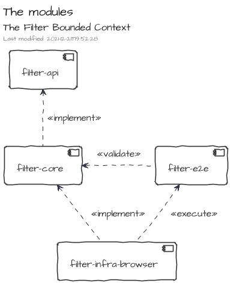
App
This bounded context manages the application lifecycle. The main purpose of the Bounded Context is to produce and publish the application state.
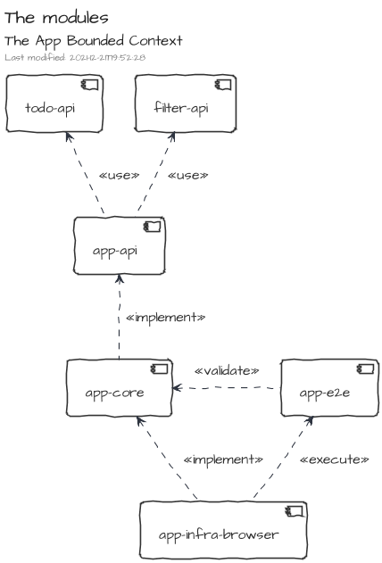
User Interface
This bounded context manages the user interactions.
It is composed of only one module, ui-elements, which provide an implementation mainly based on Custom Elements.
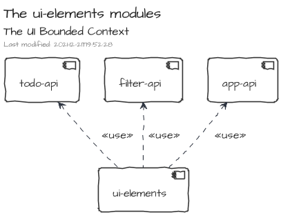
Collaboration between Bounded Contexts
AddTodo
The command AddTodo adds a new Todo to the todo list. The command is triggered by the User Interface then once the causality chain is done, the Integration Event TodosUpdated is published. Therefore, the UI can react.

The flow is similar for the ChangeFilter command.
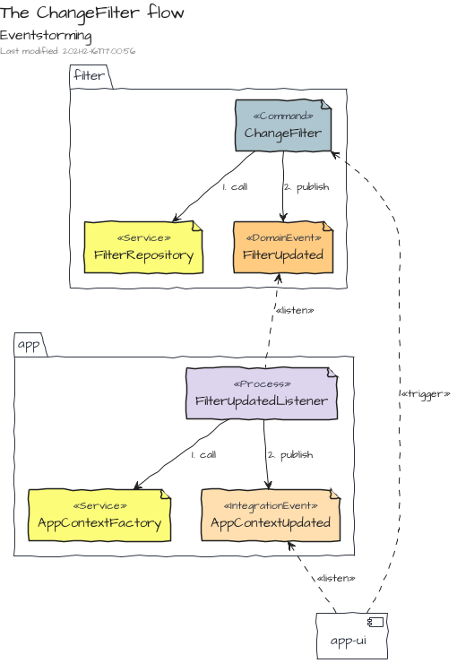
ex-greeting
This example demonstrates how to leverage on some builders and decorators to create a Custom Element which displays a greeting message.
The example is available on codepen.io!
Initiate the Custom Element class
The Custom Element ex-greeting is a regular ES6 class which extends HTMLElement :
export class ExGreeting extends HTMLElement {}
Register the Custom Element
To register ex-greeting, the decorator of @ElementBuilder is used:
import { ElementBuilder } from "@tmorin/ceb-elements-core"
@ElementBuilder.get().decorate()
export class ExGreeting extends HTMLElement {}
Initialize the Shadow DOM
The Shadow DOM of ex-greeting is initialized with the decorator of @ContentBuilder :
import { ElementBuilder } from "@tmorin/ceb-elements-core"
import { ContentBuilder } from "@tmorin/ceb-elements-builders"
@ElementBuilder.get().decorate()
@ContentBuilder.get(`<p>Hello, <span id="name"></span>!</p>`)
.shadow()
.decorate()
export class ExGreeting extends HTMLElement {}
Capture the name
The target of the greeting is captured with the field name using the decorator of FieldBuilder :
import { ElementBuilder } from "@tmorin/ceb-elements-core"
import { ContentBuilder, FieldBuilder } from "@tmorin/ceb-elements-builders"
@ElementBuilder.get().decorate()
@ContentBuilder.get(`<p>Hello, <span id="name"></span>!</p>`)
.shadow()
.decorate()
export class ExGreeting extends HTMLElement {
@FieldBuilder.get().decorate()
name: string = "World"
}
Update the Shadow DOM with the captured name
Each time the field name mutates, the element selected by span#name has to be updated with the new value.
There are two ways to handle it with the built-in <ceb/> builders : the craft style and the propagation way.
The craft style
The decorator of ReferenceBuilder retrieves the reference of the element span#name.
import { ElementBuilder } from "@tmorin/ceb-elements-core"
import {
ContentBuilder,
FieldBuilder,
ReferenceBuilder,
} from "@tmorin/ceb-elements-builders"
@ElementBuilder.get().decorate()
@ContentBuilder.get(`<p>Hello, <span id="name"></span>!</p>`)
.shadow()
.decorate()
export class ExGreeting extends HTMLElement {
@FieldBuilder.get().decorate()
name: string = "World"
@ReferenceBuilder.get().shadow().selector("span#name").decorate()
span?: HTMLSpanElement
}
Finally, the decorator of FieldBuilder handles the mutation of the field name.
import { FieldListenerData } from "@tmorin/ceb-elements-builders"
import { ElementBuilder } from "@tmorin/ceb-elements-core"
import {
ContentBuilder,
FieldBuilder,
ReferenceBuilder,
} from "@tmorin/ceb-elements-builders"
@ElementBuilder.get().decorate()
@ContentBuilder.get(`<p>Hello, <span id="name"></span>!</p>`)
.shadow()
.decorate()
export class ExGreeting extends HTMLElement {
@FieldBuilder.get().decorate()
name: string = "World"
@ReferenceBuilder.get().shadow().selector("span#name").decorate()
span?: HTMLSpanElement
@FieldBuilder.get().decorate()
private onName(data: FieldListenerData<string>) {
if (this.span) {
this.span.textContent = data.newVal
}
}
}
The propagation way
Alternatively, the decorator of AttributePropagationBuilder can be used to automatically binds the mutation of the field name to the property textContent of the selected element span#name :
import { ElementBuilder } from "@tmorin/ceb-elements-core"
import { ContentBuilder, FieldBuilder, FieldListenerData, ReferenceBuilder } from "@tmorin/ceb-elements-builders"
@ElementBuilder.get<ExGreeting>().decorate()
@ContentBuilder.get(`<p>Hello, <span id="name"></span>!</p>`).shadow().decorate()
export class ExGreeting extends HTMLElement {
@ReferenceBuilder.get().shadow().selector("span#name").decorate()
span?: HTMLSpanElement
@FieldBuilder.get().decorate()
name = "World"
@FieldBuilder.get().decorate()
private onName(data: FieldListenerData<string>) {
if (this.span) {
this.span.textContent = data.newVal
}
}
}
References
Books
- Domain-Driven Design: Tackling Complexity in the Heart of Software, by Eric Evans, 2004, www.dddcommunity.org
- Clean Architecture: A Craftsman's Guide to Software Structure and Design, by Robert C. Martin, 2018, www.pearson.com
- Enterprise Integration Patterns: Designing, Building, and Deploying Messaging Solutions, by Gregor Hohpe and Bobby Woolf, 2004, www.enterpriseintegrationpatterns.com
Articles
- Command Query Separation
- Command Query Responsibility Segregation
- Hexagonal architecture, by Alistair Cockburn